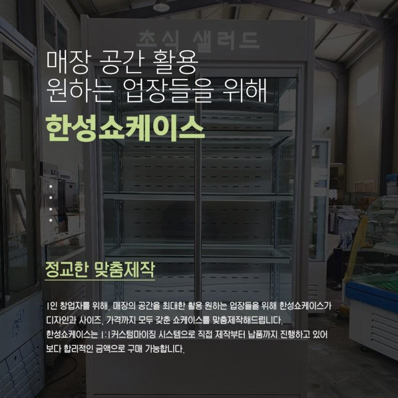
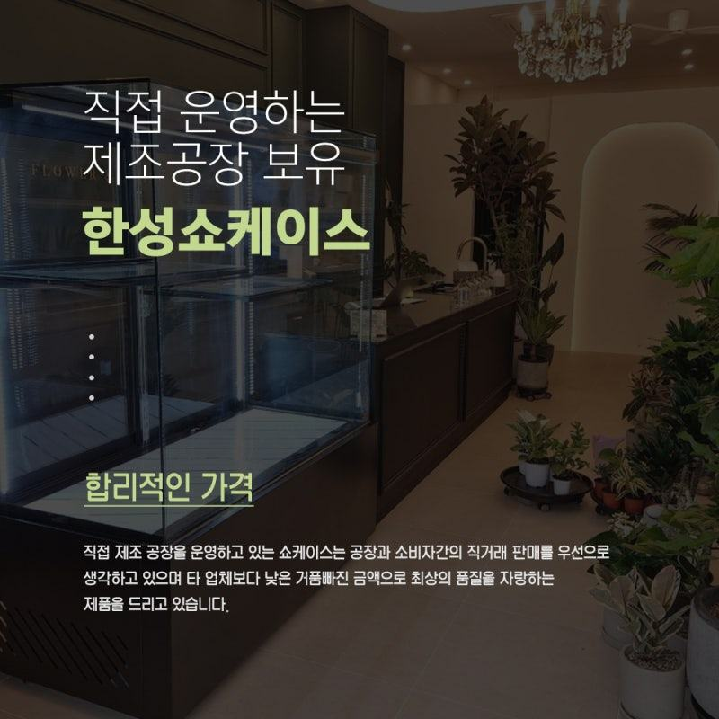
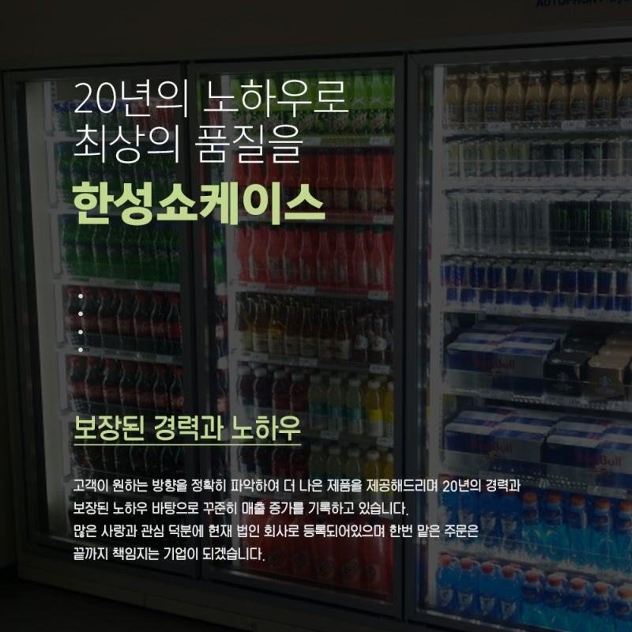
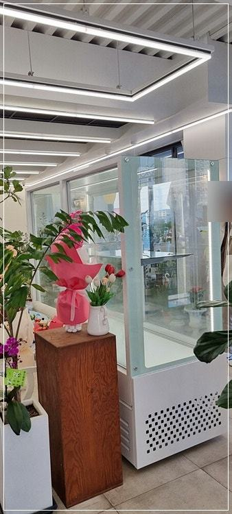

꽃냉장고
꽃냉장고 업체 비교할 때 견적서 말고 볼 것

꽃냉장고 업체는 견적 금액보다 생화에 맞는 냉각·습도 구조를 설명할 수 있는지, 설치 위치에 맞춰 직접 제작하는지, 판매 이후 A/S를 직접 책임지는지로 비교하셔야 합니다. 이 세 가지에 구체적으로 답하는 곳이라면 꽃집 운영을 이해하는 업체라고 보셔도 됩니다.
안녕하세요. 꽃집과 플라워 스튜디오에 들어가는 냉장 쇼케이스를 직접 설계하는 한성쇼케이스입니다.
꽃집 창업을 준비하며 꽃냉장고 견적을 여러 곳에서 받으시면, 비슷해 보이는 사진과 제각각인 금액 사이에서 무엇을 기준으로 골라야 할지 막막해집니다.
결국 금액만 비교하게 되기 쉽죠.
그런데 꽃냉장고는 생화 수명을 좌우하는 장비이자 손님이 꽃집에 들어와 가장 먼저 보는 진열장입니다. 어떤 업체에 맡기느냐에 따라 꽃 상태와 매장 분위기가 함께 달라집니다.
오늘은 꽃냉장고 업체를 비교할 때 견적서 숫자 말고 꼭 확인할 것들을 정리해 드리겠습니다.
1. 생화를 아는 업체인지
꽃냉장고는 음료 냉장고와 다르게 찬 바람이 꽃잎에 직접 닿지 않아야 하고, 꽃이 마르지 않도록 습도도 지켜야 합니다.
상담할 때 이 부분을 어떻게 해결하는지 물어보세요.
냉각 방식, 내부 바람 흐름, 습도 유지 방법, 물기에 강한 내장 소재를 구체적으로 설명하는 업체라면 꽃집 현장을 잘 아는 곳입니다.
반대로 용량과 온도 숫자만 이야기한다면 일반 냉장고를 꽃집용으로 파는 것일 수 있습니다.
꽃 종류를 함께 이야기해 보는 것도 좋은 방법입니다. 장미나 수국처럼 많이 쓰는 꽃과 열대 식물, 난류처럼 찬 기운에 약한 식물을 어떻게 나눠 보관할지 묻는 질문에 구체적으로 답하는 업체라면 믿고 상담을 이어 가셔도 됩니다.
- 간접 냉각 방식인지 물어보세요.
- 습도를 어떻게 유지하는지 설명을 들어 보세요.
- 내장재가 물기에 강한 소재인지 확인하세요.
2. 설치 자리에 맞춰 만드는지
꽃집은 매장이 작은 경우가 많고, 작업대와 포장 공간, 손님이 꽃을 고르는 공간이 좁은 면적에 모여 있습니다.
정해진 규격 제품을 넣으면 벽 사이가 애매하게 남거나 작업대 자리가 줄어들기 쉽습니다.
직접 제작하는 업체는 벽 폭과 천장 높이, 원하는 위치에 맞춰 크기를 정할 수 있습니다. 뒷벽을 통유리로 만들어 매장 바깥에서도 꽃이 보이게 하거나, 키 큰 꽃을 세울 수 있도록 선반 높이를 조정하는 것도 맞춤 제작이라 가능한 부분입니다.


3. 디자인 제안을 해 주는지
꽃냉장고는 매장 인테리어의 중심이 되는 경우가 많습니다. 프레임 색, 유리 구성, 조명 색이 매장 분위기와 맞지 않으면 꽃이 아무리 예뻐도 전체 인상이 어색해집니다.
매장 사진이나 도면을 보고 프레임 색과 조명 색을 함께 제안해 주는지, 사전 미팅으로 원하는 느낌을 충분히 듣는지 확인해 보세요.
디자이너가 설계에 참여하는 곳이라면 이 과정이 훨씬 수월합니다.
상담 단계에서 완성 이미지나 도면을 먼저 보여 주는지도 확인하세요. 제작에 들어간 뒤에는 바꾸기 어려운 부분이 많아, 미리 눈으로 확인하는 과정이 있는 업체가 결과물 차이가 적습니다.
4. 팔고 난 뒤를 누가 책임지는지
꽃집은 가정의 달이나 졸업·입학 시즌처럼 성수기에 꽃을 가장 많이 들여놓습니다. 이때 냉장고가 멈추면 손실이 한꺼번에 커지기 때문에, 고장 났을 때 누가 얼마나 빨리 오는지가 매우 중요합니다.
유통만 하는 곳은 수리를 다시 제조사에 넘겨야 하는 경우가 있습니다. 직접 제조하는 곳인지, 무상 A/S 기간과 접수 방법은 어떤지, 우리 지역에 서비스 센터가 있는지를 계약 전에 꼭 확인하세요.
- 직접 제조·설치하는 업체인지
- 무상 A/S 기간과 접수 방법
- 가까운 지역 서비스 센터
체크리스트
- 간접 냉각과 습도 유지 구조 설명
- 설치 자리 맞춤 제작 가능 여부
- 프레임·조명 디자인 제안
- 직접 제조 여부
- A/S 접수 방법과 지역 센터
현장에서 자주 보는 경우: 기성 냉장고가 작은 꽃집에 맞지 않을 때
꽃집을 새로 여시는 1인 창업 사장님들은 기성 냉장고의 모양과 사이즈가 모두 같게 정해져 있어 공간을 제대로 쓰지 못하는 경우가 많습니다.
작은 매장일수록 냉장고 하나가 작업 공간을 크게 차지하게 됩니다.
그래서 저희는 꽃쇼케이스도 고객님이 원하시는 위치와 공간에 맞춰 1:1로 맞춤 제작합니다. 유통 업체가 아니라 직접 제조해 판매하는 공장이라 중간 마진 부담을 줄일 수 있고, 판매보다 사용하는 기간을 중요하게 보고 사후 관리까지 신경 쓰고 있습니다.





자주 묻는 질문
꽃냉장고 업체 상담 때 무엇을 준비하면 좋나요?
설치할 벽의 폭과 높이, 매장 사진, 주로 보관할 꽃 종류와 길이를 알려 주시면 상담이 빨라집니다. 원하는 분위기의 참고 사진이 있으면 함께 보내 주세요.
직접 매장을 방문해서 상담할 수도 있나요?
전화 문의 후 방문하셔도 되고, 바로 찾아오셔도 상담해 드립니다. 대표전화는 031-986-2458입니다.
꽃냉장고 고장 시 지방에서도 수리를 받을 수 있나요?
한성쇼케이스는 전국 240여 개 A/S 센터를 운영하고 있어 지방 꽃집도 접수 후 가까운 곳에서 대응합니다.
매장 조건에 맞춰 만드는 한성쇼케이스
원하시는 제품 사진과 설치할 공간 사진만 보내 주셔도 매장에 맞는 구성을 추천해 드립니다.
- 전국 240여 개 A/S 전담 센터 운영
- 본사 대량 자재 매입으로 품질 대비 합리적인 가격
- 유럽제·삼성 냉각 콤프레셔 적용
- 국내 최초 쇼케이스 전문 디자이너 상주
매장 폭과 원하는 진열 구성을 알려 주세요. 실측과 견적을 안내해 드립니다.
031-986-2458